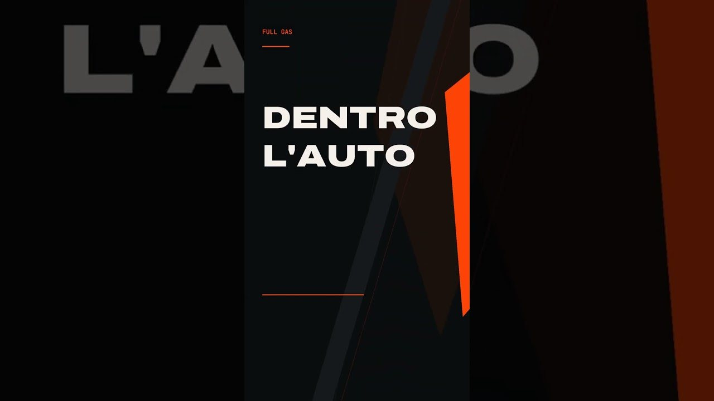

Il Diario · Il Dettaglio · 13 settembre 2026 · 5 min di lettura
Bugatti Tourbillon: il paradosso dell'elettrico
Un V16 aspirato da 8,3 litri che gira a 9.000 giri, tre motori elettrici, 1.800 cavalli e un cruscotto a ingranaggi disegnato da un orologiaio. L'elettrico dà la risposta immediata, il motore conserva il carattere meccanico. Il primo Dettaglio di Full Gas.

Il video si guarda qui, ma la visualizzazione conta su YouTube: è lo stesso player del canale. Se ti piace, lascia un commento.
La Bugatti Tourbillon è la macchina che spiega meglio di tutte una cosa che sembra una contraddizione: l'elettrico non è arrivato per sostituire il motore, ma per farlo sembrare più motore. Ne abbiamo fatto la prima pillola de Il Dettaglio, due minuti e mezzo. Qui ci sono i numeri per intero, con le fonti.
I numeri
Il paradosso
Un motore aspirato da sedici cilindri ha un difetto, ai bassi regimi: deve salire di giri per dare tutto. È lì che entrano i tre motori elettrici: rispondono subito, riempiono il buco, e lasciano al V16 il compito di fare quello che un V16 fa meglio di qualsiasi altra cosa, cioè girare a 9.000 giri facendo il rumore che fa. L'elettrico fornisce la risposta immediata; il motore conserva il carattere meccanico. Non è un compromesso: è una divisione dei compiti.
Ed è anche il motivo per cui la Tourbillon non è un'ibrida come le altre. La batteria è piccola, 24,8 kWh, e serve a spingere, non a fare chilometri: in elettrico puro se ne fanno circa sessanta. Il resto è benzina, con un cambio a doppia frizione montato dietro il motore.
Il cruscotto a ingranaggi
Il nome viene dal tourbillon, il meccanismo degli orologi che compensa la gravità. E il dettaglio che ci ha fatto scegliere questa macchina per il primo episodio è dentro l'abitacolo: il quadro strumenti è completamente analogico, mosso da ingranaggi, disegnato per sembrare il movimento di un orologio. Le lancette del tachimetro e del contagiri si muovono come quelle di un cronografo. L'ha costruito la manifattura svizzera Concepto. In una macchina da 1.800 cavalli, il pezzo più tecnologico è quello senza uno schermo.
Il pezzo più tecnologico è quello senza uno schermo.Il Dettaglio · Bugatti Tourbillon
Fonti e immagini
Comunicati Bugatti Newsroom (The Bugatti Tourbillon: an automotive icon pour l'éternité; Sound of a new era: the Bugatti Tourbillon's V16) e Rimac Newsroom. Le immagini e le riprese usate nel video sono di Calreyn88 e Alexander-93 (CC BY-SA 4.0, via Wikimedia Commons); la musica è «Neon» di Scott Buckley (CC BY 4.0). Tutti i crediti sono nella descrizione del video, come sempre.